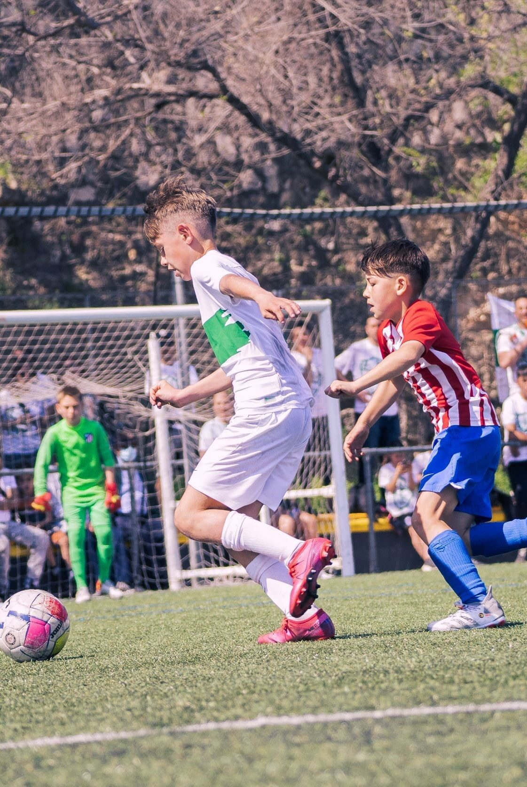
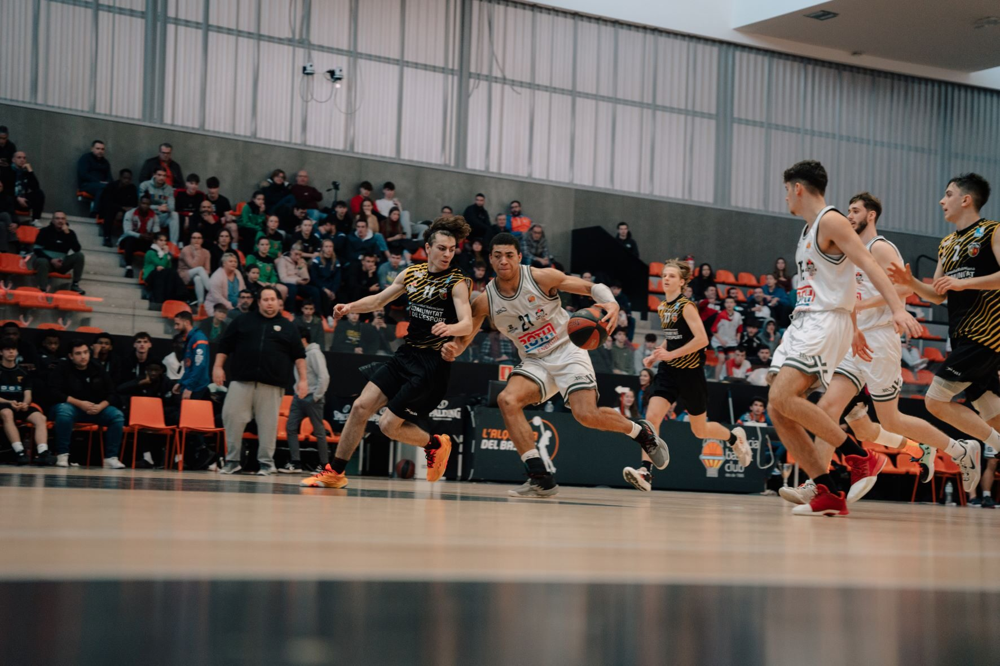
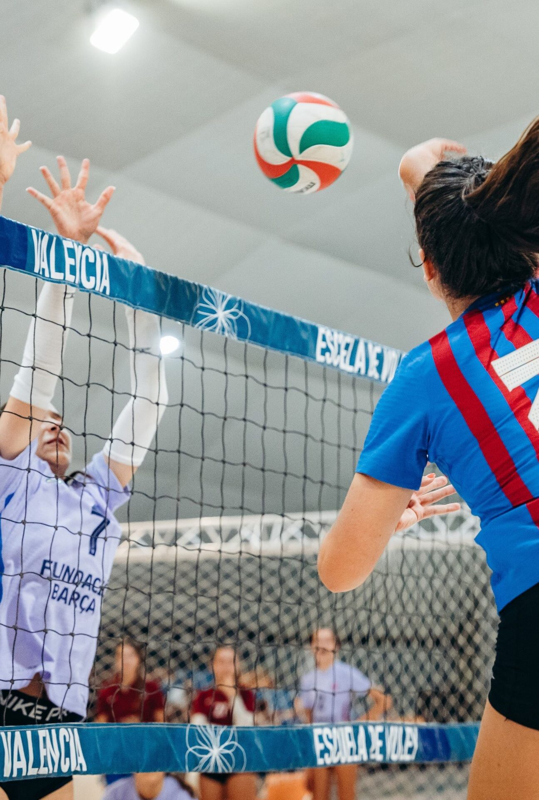
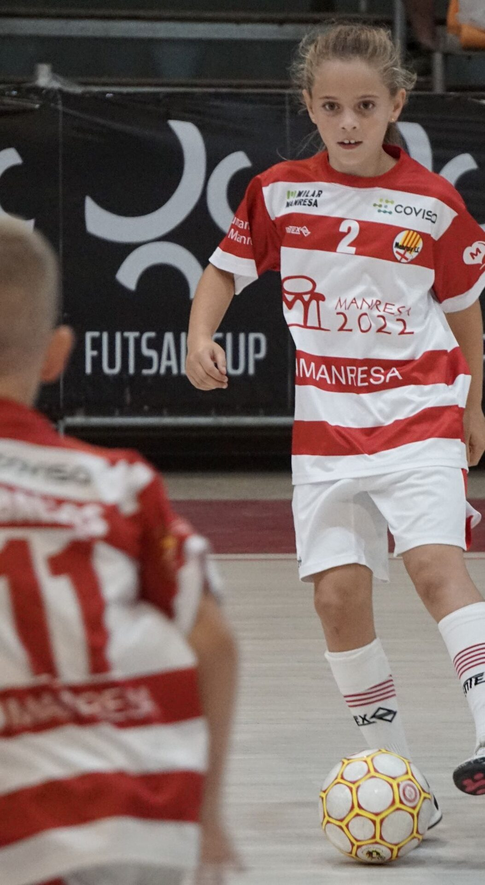

Categorías desde benjamín hasta senior, en césped natural y artificial homologado.
Ver disponibilidad
Nuestra especialidad: 3 torneos internacionales al año, pista central para 8.000 espectadores.
Ver disponibilidad
Torneos y training stages para equipos femeninos y masculinos de todas las categorías.
Consultar fechas
La Cullera Futsal Cup: futsal, playa y Aquópolis en la despedida de temporada.
Ver disponibilidadCada torneo se diseña a medida del deporte: instalaciones homologadas, arbitraje profesional y un programa de actividades alrededor de la competición.